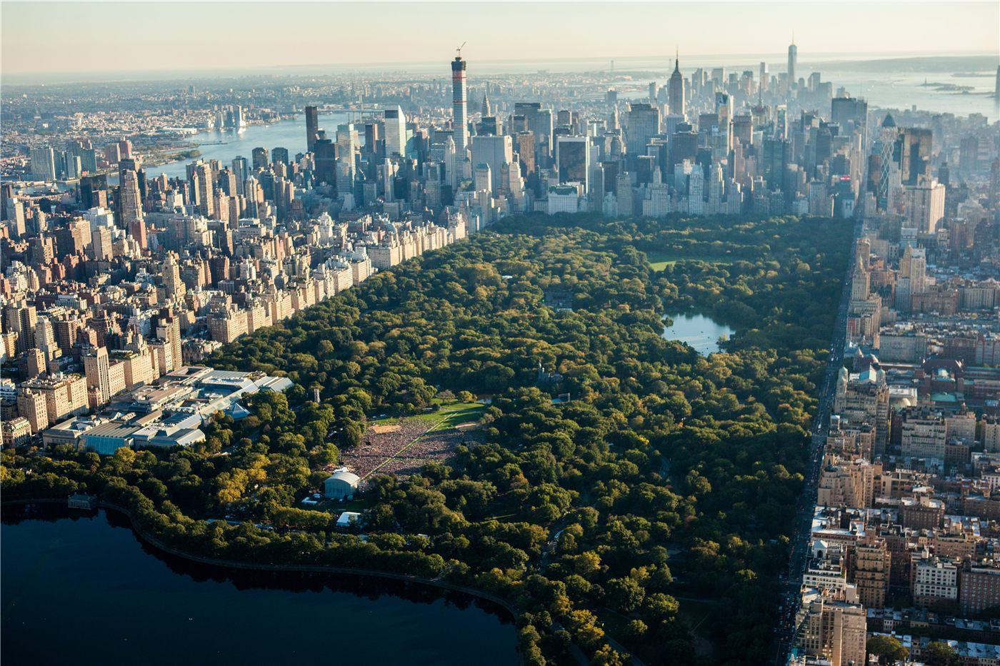

뉴욕 센트럴파크서 마차 질주 사고…최고 관광 명소가 아수라장
미국 뉴욕의 대표 관광 명소인 센트럴파크에서 관광 마차가 통제를 잃고 질주하는 사고가 발생해 일대가 큰 혼란에 빠졌다.
정가호 기자 · 2026.06.19
橋국제

조선일보는 뉴욕 센트럴파크에서 마차 질주 사고가 발생해 최고 관광 명소가 아수라장으로 변했다고 전했다. 사람이 많이 몰리는 명소에서 일어난 사고라 안전 관리 논란이 제기됐다.
광고 문의 · 300×250명소의 안전 관리 도마에
센트럴파크의 마차 관광은 오랜 명물이지만, 동물 복지와 보행자 안전을 둘러싼 논쟁이 끊이지 않았다. 이번 사고로 마차 운영 규정과 안전장치를 강화해야 한다는 목소리가 커질 전망이다.
관광객이 몰리는 공간에서의 안전사고는 도시 관리의 취약점을 드러낸다. 당국은 사고 경위를 조사하고 재발 방지책을 마련할 것으로 보인다.
華橋時報는 해외여행이 잦은 화인 독자에게 관광지 안전 정보의 중요성을 함께 전한다.
출처·참고 (사실 확인용 — 본문은 직접 재작성)
· 조선일보 2026.06.19 '뉴욕 최고 관광 명소가 아수라장으로…센트럴파크 마차 질주 사고'
· 조선일보 2026.06.19 '뉴욕 최고 관광 명소가 아수라장으로…센트럴파크 마차 질주 사고'